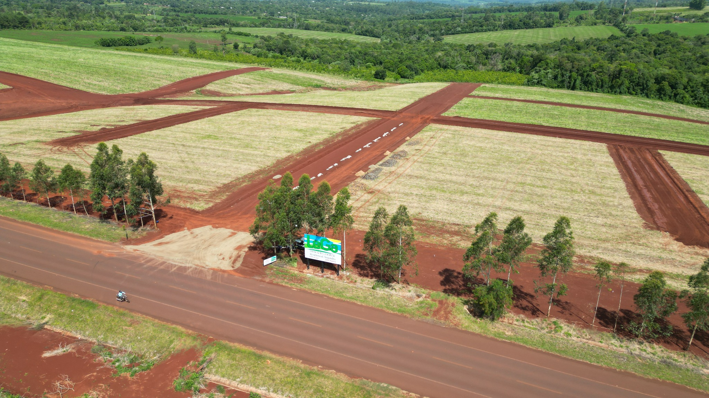
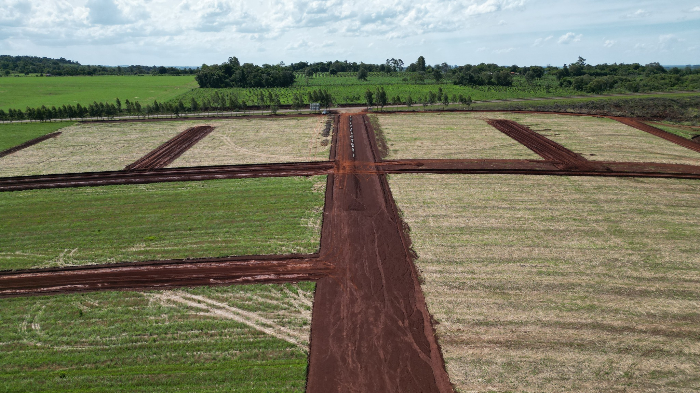
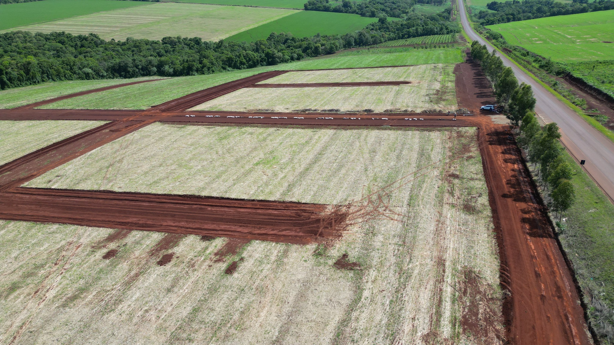
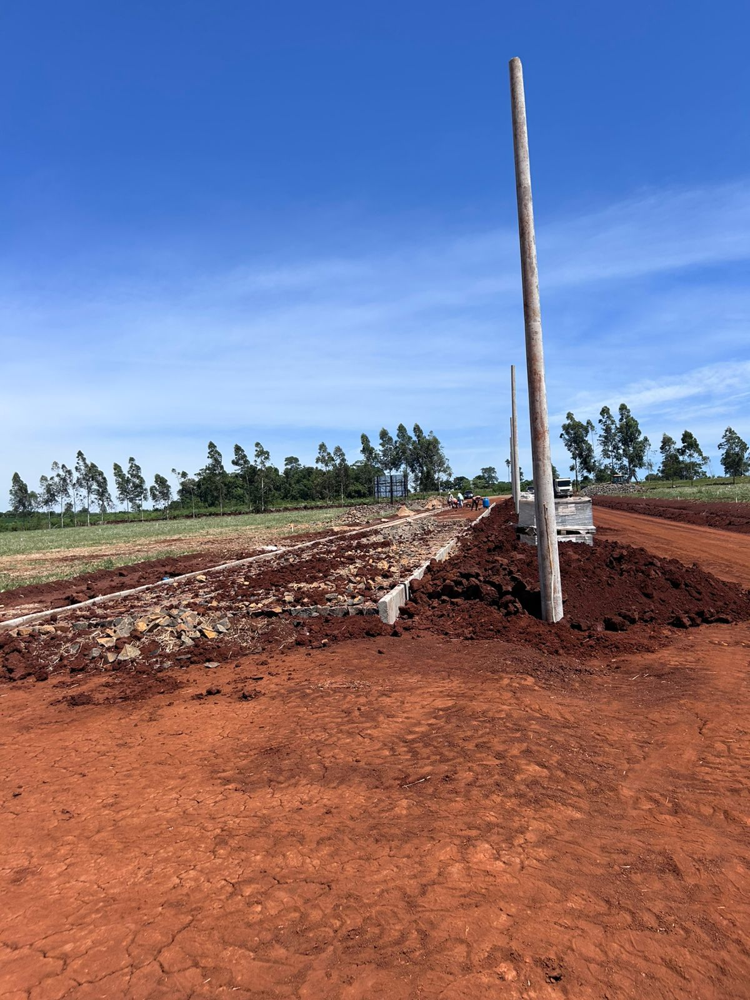
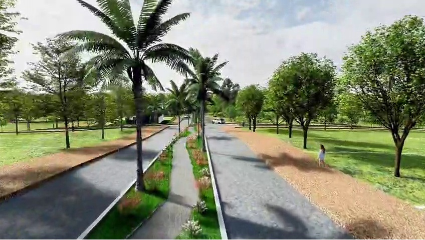
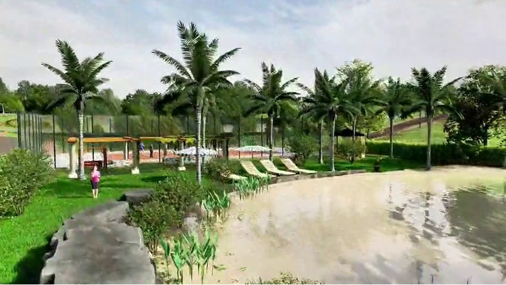

Residencial Alejandra – Lotes de 12x30 en Otaño
Ubicación: Otaño, sobre ruta asfaltada
Superficie: 360 m² (12 × 30)
Cuotas: Desde Gs. 500.000 a Gs. 2.000.000
Financiación propia hasta: 130 meses
Precio contado: 50% de descuento (financiable hasta 12 meses)
Video del proyecto
Mirá la vista aérea del barrio y recorré el proyecto.
Descripción del proyecto
Residencial Alejandra es un barrio planificado en Otaño, pensado para quienes buscan combinar naturaleza, tranquilidad y proyección de crecimiento. Los lotes permiten construir vivienda permanente, casa de descanso o invertir a mediano y largo plazo.
El proyecto se desarrolla sobre ruta asfaltada y rodeado de áreas verdes, con infraestructura proyectada para brindar comodidad a las familias y atractivo para inversores.
Imágenes reales del lugar




Renders del proyecto


Plano del proyecto